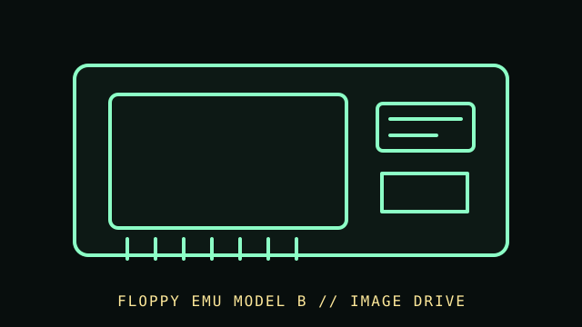

[ FLOPPY DRIVES // IDENTIFIED MODEL ]
Floppy Emu Model B
Floppy Emu Model B is a microcontroller-based disk-drive emulator for supported Apple systems. It serves disk images from flash storage through an Apple-specific drive interface; it is not a magnetic-media drive.

MODEL IDENTIFICATION: Big Mess o’ Wires Floppy Emu Model B; record board revision, firmware, attached cable, host model, and mode/configuration. This record keeps variant-dependent claims qualified; verify the physical unit and applicable manual before connecting, servicing, or formatting media.
Recorded specifications
| Catalog model | Floppy Emu Model B |
|---|---|
| Device type | Apple-system floppy emulator with removable flash storage |
| Interface / connector | Apple-system-specific drive signaling, selected by cable/firmware mode for the supported Apple computer family; follow the Model B manual. |
| Media / formats | Disk-image files on the emulator’s supported flash storage. Image format, disk type, and host behavior depend on firmware/mode; no physical floppy capacity applies. |
| Revision caution | Match full model code, board/ROM/firmware revision, connector, cable, and documentation edition. Family-level ratings and host claims do not automatically apply to every unit. |
Host-controller and format compatibility
- Use only with a supported Apple host and the exact interface cable/mode documented by the maker. It is not a PC USB floppy and does not use a generic PC floppy cable.
- Supported disk-image types and features vary by Apple host and firmware. Do not assume support for every copy-protected, timing-sensitive, or flux-level disk.
- Preserve original image files and configuration; emulation is not a replacement for physical media conservation or raw magnetic capture.
Preservation and safe cleaning
Power off the Apple host before changing cables or mode. Back up flash contents and preserve original disk images read-only. Do not clean it as a magnetic drive; protect the board and connectors from ESD, dust, and liquid, and document firmware/configuration.
For a disk acquisition, record the physical media label and condition, drive/model/revision, controller, host, software/firmware, settings, and any errors. Keep original media and raw captures/images unchanged; checksum verified copies and document conversions as derivatives.
Primary manuals & standards/archive references
- Floppy Emu — official product and compatibility documentationManufacturer information for product versions, supported systems, and software.
- Floppy Emu documentation/manuals — Big Mess o’ WiresFollow the Model B manual and cable/firmware notes for the exact configuration.
Source scope is stated per link. Prefer the matching manufacturer manual and revision over family summaries. Capacities and recording modes are omitted when not supported for the exact model and format.